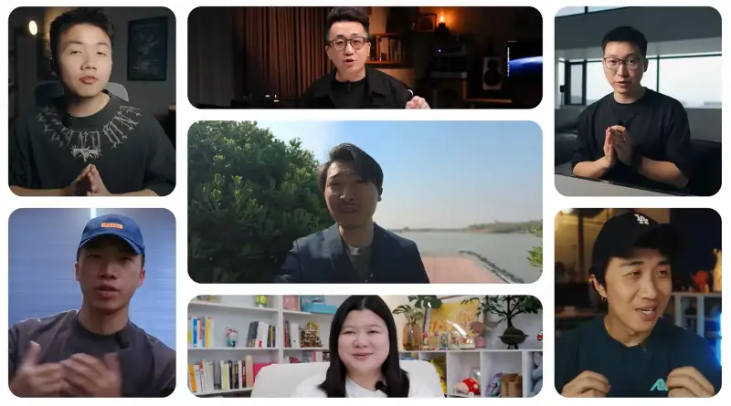
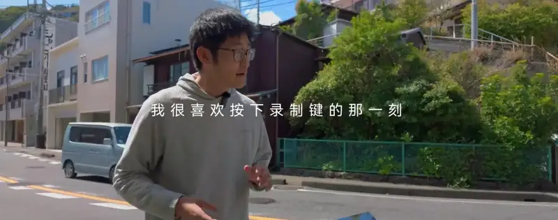
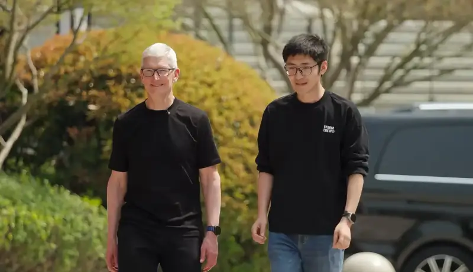
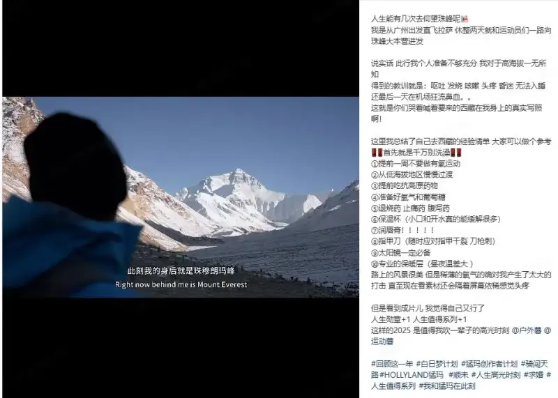
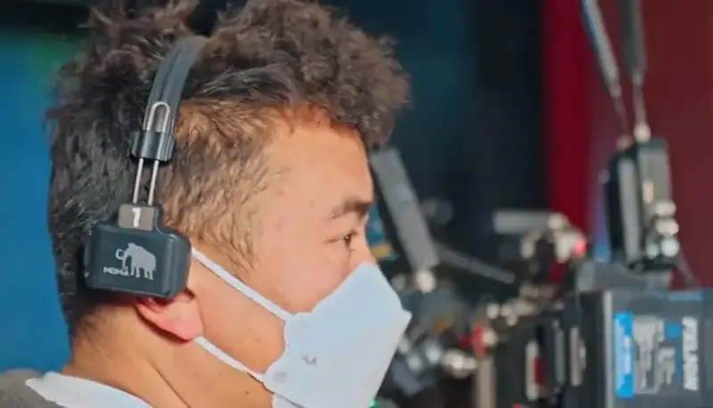
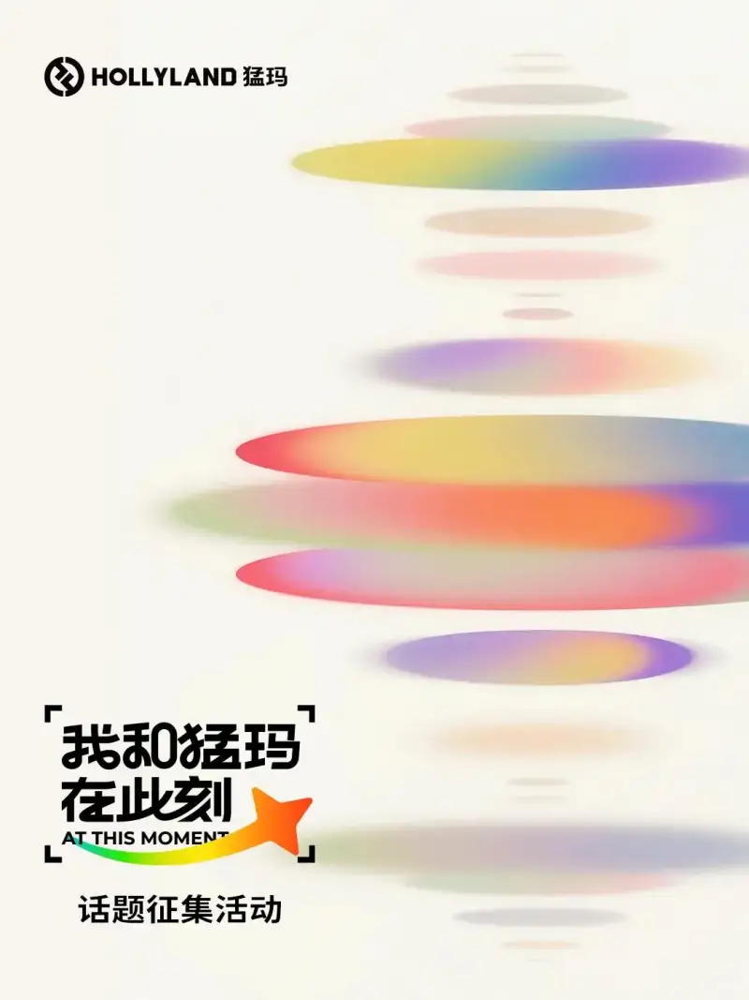
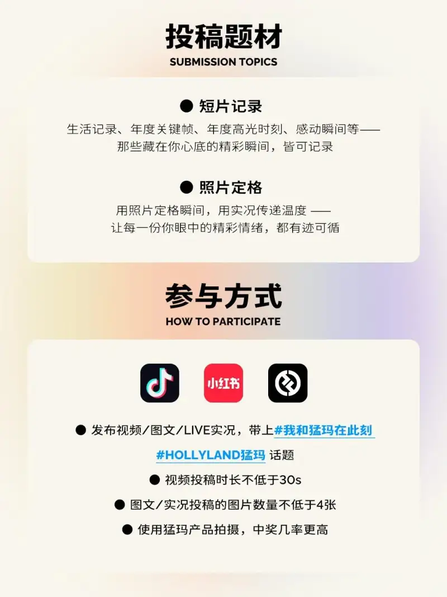

portant;">In the fast, high-pressure life today, content creation is quietly shifting. More and more creators turn the camera toward daily life itself, instead of toward highly designed, heavily edited output. The un-rehearsed moments that really happen are becoming the material worth keeping.
portant;">Audio and video gear is no longer only a "finished-product tool." It is now a key way for creators to keep the process, the emotion, and the memory of creation.
portant;">On this trend, the global wireless audio-video brand HOLLYLAND launched the "Me and Hollyland, Right Now" open call for creators. It is open to imaging creators, content producers, and people who keep a daily record of life. It invites everyone to share the creative and life moments that really happened and can never be repeated.
portant;"> 
portant;">1. Starting from the creator: why Hollyland cares about "Right Now"
portant;">The "Me and Hollyland, Right Now" co-creation campaign is not an emotional gesture. It is a natural extension of the product and technology choices Hollyland has made.
portant;">In wireless audio and video, Hollyland has long served demanding professional sites such as film shoots, large concerts, and live sports. As its products keep improving, Hollyland also works to lower the technical barrier. It wants creators to make fewer decisions and face fewer interruptions from gear, so they can give more attention to the content that is happening.
portant;">Based on this view, Hollyland keeps cutting steps and simplifying connection in its wireless video links, wireless microphones, wireless intercom, and live-stream cameras. It also brings the stability and reliability once built for professional sites into the daily creation of more creators.
portant;">In long-term feedback from millions of creators, Hollyland did not see a broad demand for "more complex features." It saw a repeated need to know "can I record this moment smoothly right now."
portant;">When gear is reliable and light enough, creators do not have to make technical trade-offs before they express themselves. Then the unrepeatable moments can be kept whole.
portant;">"Right Now" is the common goal behind all these product choices.
portant;">
portant;">2. Tim of FilmStorm: how sound supports real creation
portant;">Tim of FilmStorm, a well-known creator and the face of Hollyland, is one of the people who started this campaign. He also joined the "Right Now" program.
portant;">For a long time, the FilmStorm team has made content under heavy shooting and complex production. From multi-camera shoots and on-location recording to in-depth interviews, sound has always been a key part of how complete the content feels.
portant;">In the launch video, Tim did not speak as a brand spokesman. From the first-person view of a creator, he looked back on real, specific moments of creation.
He said, "What stays with me is not a big, carefully designed scene. It is a 'right now' that got caught by surprise, the wind on a trip, a call of 'action' on set, or a laugh I recorded on the fly."
portant;">

portant;">These unplanned sounds often become the clearest memory anchors of the whole year when you look back.
portant;">Tim's take also explains "Right Now" from the creator side. Content that lasts is usually born in the process of creation itself, not in the final result. Reliable, steady sound recording is the basic condition that lets these moments be kept whole.
portant;"> 
portant;">Former Apple CEOCook visited FilmStorm in Hangzhou, wearing the Hollyland LARK M2 microphone. Image from the web.
portant;">
portant;">
portant;">3. The "Right Now" of different creators: sound recording in real use
portant;">The "Me and Hollyland, Right Now" campaign drew creators from many fields. This content is not a grand showcase of results. It mostly comes from records made in real use.
portant;">The outdoor creator @Wenjunhenku flew from Guangzhou to Lhasa, and after a short rest he set out for the Everest Base Camp. Altitude sickness brought vomiting, fever, and headache, and made the trip full of doubt. Still, he kept using a Hollyland wireless mic to record through it all. The wind, his breathing, and the talk on site were kept whole, so viewers can feel the change in his state in the extreme environment. On the trip he also recorded a proposal at the base camp, and saved that unrepeatable moment together with its sound.
portant;">

portant;">Other creators keep a record of their own growth in daily work. When photographer @Gao Qizhong looked back on the year, he said that Hollyland video links and audio gear were a steady support through it all, whether he shot a hit piece or worked with peers. For him, the value of gear is not only the final image. It is that every attempt and every breakthrough gets recorded at once and can be reviewed.
portant;">

portant;">These real cases from different fields and stages draw one clear picture. Great moments are not only for professional sites. They live in every real process of creation.
portant;">Through this co-creation, Hollyland shows not only its technical strength in wireless audio and video. It also shows its vision to shift from a supplier of professional gear to an enabler of a global creative ecosystem. The goal is to make creation freer and lighter, and to let every moment be recorded whole.
portant;">Right now, the "Me and Hollyland, Right Now" open call is still running. Hollyland invites more creators to join, and to record their own real moments with sound and image.
portant;">

portant;">
